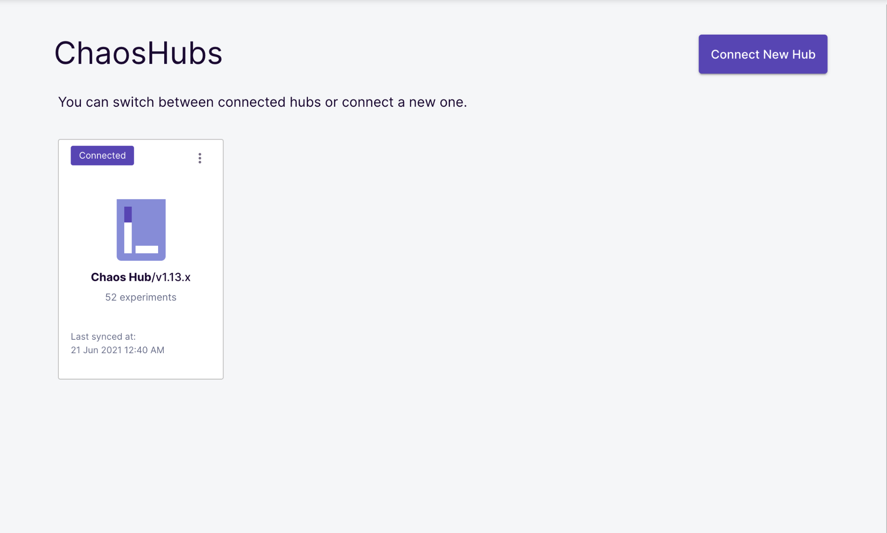
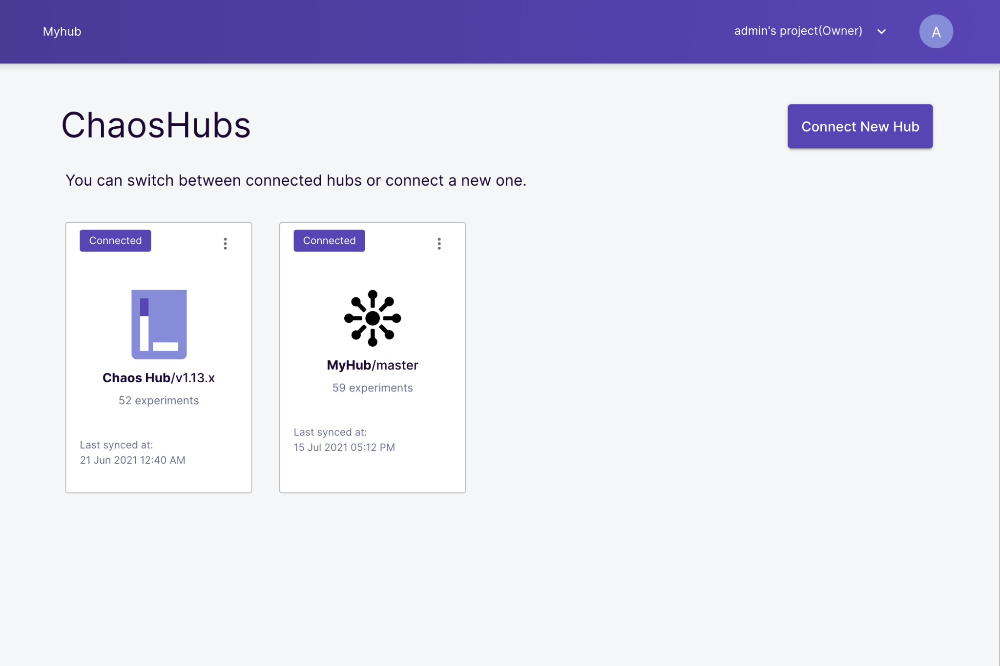
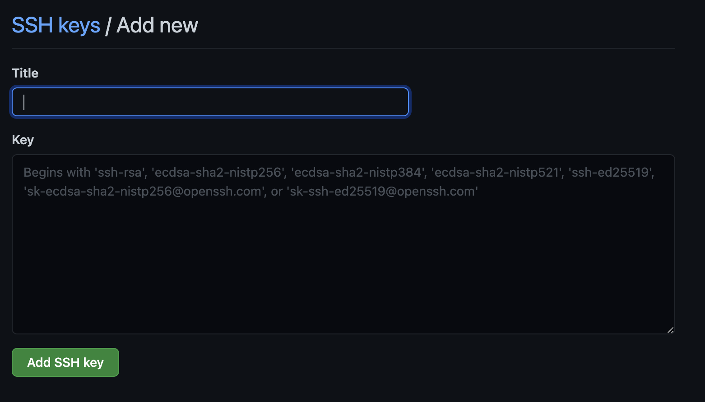

Welcome
In this tutorial, you will learn how to create your own custom chaos workflows using Litmus. You will use ChaosHub and asset discovery to create your own custom Workflow.
What you will learn
- What is ChaosHub
- How to use Chaos Hub
- How to connect to a new Chaos Hub
- Create a custom workflow using Chaos Hub
In this tutorial, you will inject a pod-delete fault against a sample microservices application called podtato-head and verify if the service continues to be available through the chaos duration.
Pre-Requisites
- Minikube 1.2.0 or later. Recommended sizing of at least: 2 vCPUs, 8GB memory, 10GB of disk space (for persistent volume creation)
- Helm3 or Kubectl
- Access to the Internet from Cluster (For Air-Gapped Environments refer to this guide)
- Have Litmus 2.x.x installed.
In this section, you will use the Litmus Portal dashboard to set up your chaos project, and prepare for chaos workflow execution.
Access and Login to Litmus Portal Dashboard
Obtain the service endpoint of the litmus-frontend service, either via nodePort or load balancer URL, and open on your preferred browser. In the case of the former, use the external IP of any one of the cluster nodes with the assigned nodePort.
kubectl get svc -n litmus
NAME TYPE CLUSTER-IP EXTERNAL-IP PORT(S) AGE
litmusportal-frontend-service NodePort 10.40.9.102 <none> 9091:31616/TCP 12m
litmusportal-server-service NodePort 10.40.10.186 <none> 9002:31242/TCP,9003:32073/TCP 12m
mongo-service ClusterIP 10.40.7.121 <none> 27017/TCP 12mUse the default credentials - username/password: admin/litmus to login.

What is Chaos Hub?
Litmus Chaos Hubs allows you to connect to your Public Choas Hubs pulled directly from your Github repos, you can then customize the experiments, orchestrate workflows, and use them in the portal as custom workflows.
Initially, there is one Chaos Hub present which is the Litmus Chaos Hub. This hub contains experiments from https://hub.litmuschaos.io/. You can use this default Hub or connect to a new external hub.
Connecting to a Chaos Hub on a public GitHub repository
Navigate to the Chaos Hub tab on the portal and click the Connect New Hub button.

Here, you will be presented with a form to enter the name of the Chaos Hub. You will need to provide a name, select public, and type in the URL of the Github repo you want to add as well as its corresponding branch.

Here we would be using a fork of the Chaos Hub which is a public repo for our example. You can find this fork here.
First, give the Hub a name of MyHub, then type in the repo URL https://github.com/Gbahdeyboh/chaos-charts and the branch master. Then click the Submit button. You should observe that you now have two hubs, MyHub and Chaos Hub.

Click on the MyHub Hub and view the available charts it has.

Connecting to a Chaos Hub on a private Github repository
Navigate to the Chaos Hub tab on the portal and click the Connect New Hub button.
Select private and provide the name of the Chaos Hub. Provide a name, select private and type in the URL of the Github repo you want to add as well as the corresponding branch.

Because this is a private repo, you have to give the portal access to it. This can be done by using any of the following.
- Access token.
- SSH key.
Access token
To add an access token, navigate to github.com/settings/tokens and click on the Generate new token button.

Add a description to the note section of the token, then select scopes for the token. The scopes let GitHub know what permissions levels the token has, select the scopes you want but specifically give the token read access to your repositories and click on the Generate token button.
Make sure you copy your token once it is added. You won't be able to copy it afterwards, you will need to generate a new one.

Go back to the portal and paste this token into the access token field, then click the Submit Now button.
SSH key
If you selected the SSH key option, you will be presented with an already generated SSH key, click the Copy button to copy this key and go to github.com/settings/ssh to add it to your account.
You will see a new SSH key button, click it, add a title and paste in your SSH key and click the Add SSH key button.
Click the submit now button.

Exploring the Chaos Hub
After you have added a new hub, you can click on the hub name to explore the charts and workflows present in the hub.
In the default Chaos Hub, there is a pre-defined workflows section and a chaos charts section. The pre-defined workflows allow you to quickly set up a simple workflow and execute it.
You can now create your own custom workflows from experiments in the chaos charts!.
In this section, you will create your own custom workflows from the hub we connected to in the last section.
1) Select a Target Workflow
First, navigate to the Workflows tab on the portal and click the Schedule a workflow button. This will take you to the workflow page.
You need to select a Target Agent to proceed, these agents consist of CRDs and the required resources to run a chaos workflow. While installing the Litmus Portal, a default agent named Self Agent is created. Select the Self Agent.
Note: You may have to wait for the agent to be up and ready, after which you can move forward by again clicking on "Next"
2) Choose a Workflow
Here, you will see four different options from which you can create a workflow. For this tutorial, we will only care about the Create a new workflow using experiments from the MyHub option. Select this option.
Then select the Hub you want to connect to which is MyHub and choose an experiment. Select the podtato-head experiment, this experiment injects a pod-delete fault into a sample microservice application. Click the Next button when done.
3) Workflow Settings
Here, you can change the name of the workflow and also provide a description to the workflow. This section also consists of information regarding the namespace where the workflow will be scheduled. Click next when done.
4) Tune Workflow
This section consists of all the information related to the chaos workflow. Some new and advanced features that are present in this section are :
- Workflow Visualization: This feature allows you to visualize the workflow even before scheduling it. This gives brief information related to the structure of workflow i.e if the experiments are present in a serial or parallel way.
- Workflow Table: This table contains the list of experiments present in the workflow. It also consists of some valuable information related to the target applications.
- Edit Yaml: With this option, you can view and make changes in the workflow manifest with a YAML editor.
- Revert Chaos: For custom workflows, you can enable or disable the revert step from the portal. With the revert step enabled, a new functionality called podGC is also added which deletes the workflow pods after the completion of workflow as part of the clean-up process.

Don't care too much about the above if you do not understand it yet. Click the Next Button to proceed.
5) Reliability Score
You can assign weights to the experiments present in the workflow. These weights will be then used for the calculation of the resilience score after the workflow completion. By default, 10 points are assigned to each experiment. This can be altered as per your use case. After selecting weights click on the Next Button.
6) Schedule
Workflows can be scheduled in two ways;
- Schedule now: This option allows the workflow will start as soon as you schedule it.
- Recurring Schedule: This option will allow you to schedule the workflow in recurring ways. It converts a normal workflow to Cron workflow and a cron syntax is added in the workflow manifest. The following methods are available to schedule a workflow in recurring ways:
- Every Hour
- Every Day
- Every Week
- Every Month
7) Verify and Commit
This is the final step in the workflow creation process. In this step, you can validate all the changes related to the workflow like the workflow name, the experiment weights, workflow description, workflow manifest, etc. Once you have verified all the changes, you can click the Finish button to start the schedule.
8) Visualize and Analyze the workflow
You can now Visualize your workflow by following the step 5 and 6 of the Getting Started Tutorial.
In this tutorial, we have covered the steps involved in connecting to a new hub, and scheduling a custom chaos workflow on Litmus Portal. To learn more about Litmus and the Litmus Portal, you can refer to Litmus Documentation.
Please visit us in our LitmusSlack Channel (in Kubernetes workspace) and tell us how you like LitmusChaos and this tutorial! We are happy to hear your thoughts & suggestions!
Also, make sure to follow us on Twitter to get the latest news on LitmusChaos, our tutorials, and the newest releases!